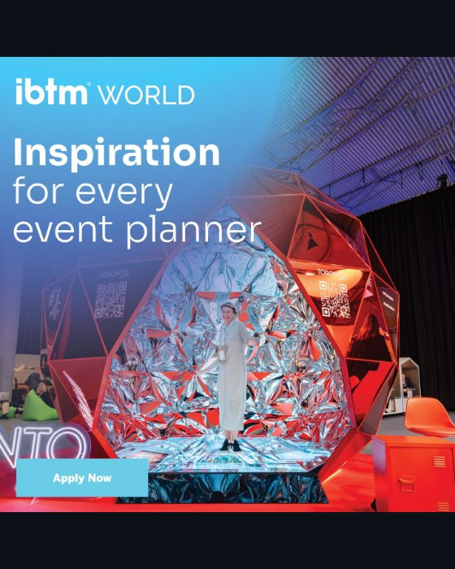
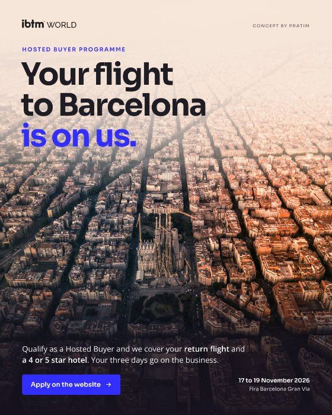
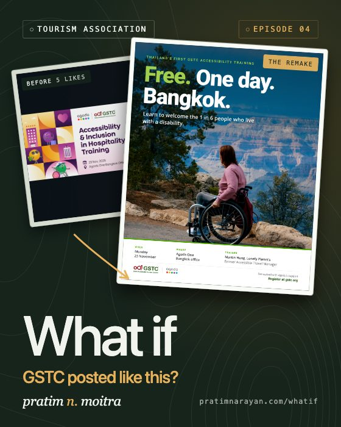
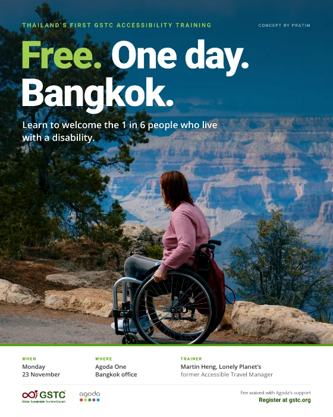
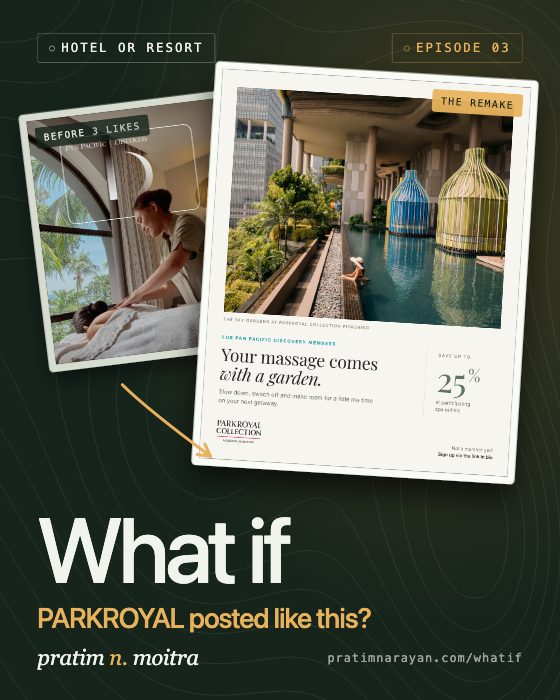
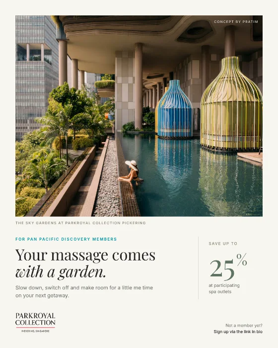
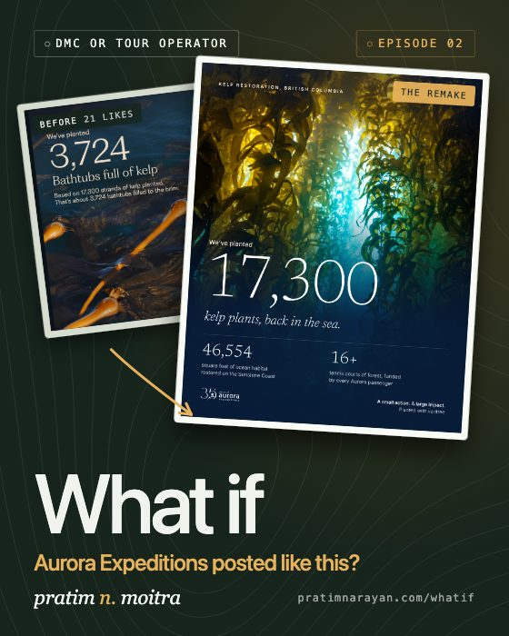
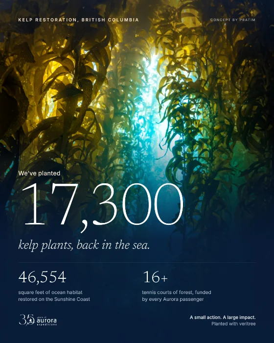
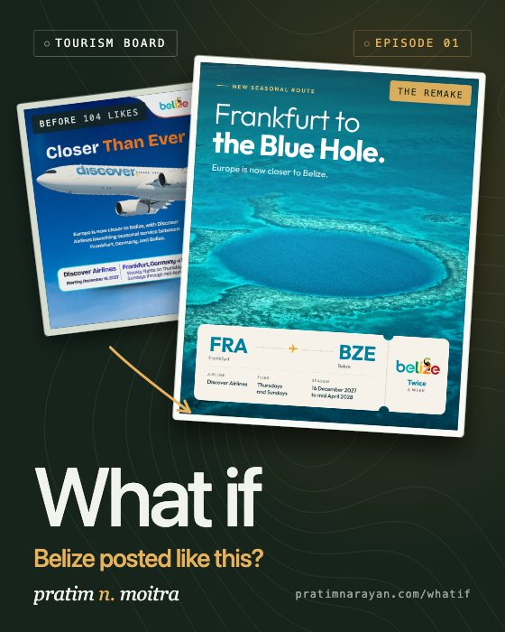
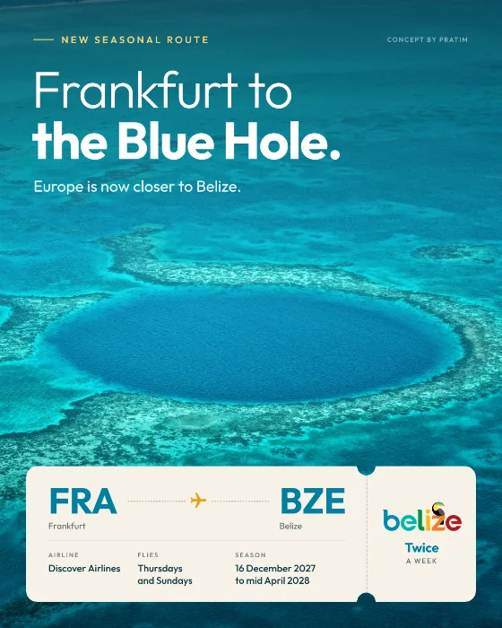

Get 5 free posts in 7 days
You keep them either way.
Get 5 free postsReal tourism posts that got almost no reaction, rebuilt in a tested style. Drag any one to compare.


Drag the handle
How a trade show could recruit buyers with the offer it already makes








The gap
Each episode starts with a post that reached a small fraction of the people who already follow the brand. The bars show how many followers it took to get one reaction.
Counts as they were when each post was checked. A post that lands usually hears back from about 1 in 100 followers.
How the series works
The What If series is a set of social media remakes by Pratim Narayan Moitra. Each episode takes one real post from a tourism brand that got almost no reaction, picks one visual style from a moodboard of 350 strong travel posts and rebuilds the post in that style, with three notes on what changed and why.
No. Every episode is made independently, without the brand's involvement, as a public exercise in what I would do. The original post is shown for commentary and is credited and linked to the account. If a brand would like an episode changed or removed, one email does it.
From a benchmark of 150 travel accounts I track. I pick posts that reached a small fraction of the account's followers, on accounts that are good at what they do, because the gap between the two is where the lesson is. Every brand in round two is international and under 160,000 followers.
From the brand's own website where it has a photo worth using, otherwise from photographers who publish under the Unsplash licence. Every photo is credited on the episode page.
Yes. The free week does exactly this for your own account, with 5 finished posts you keep whether or not we work together.
One email when a new episode goes up. Nothing else. There is an RSS feed too.
You keep them either way.
Get 5 free postsNo call needed.
Get a free audit